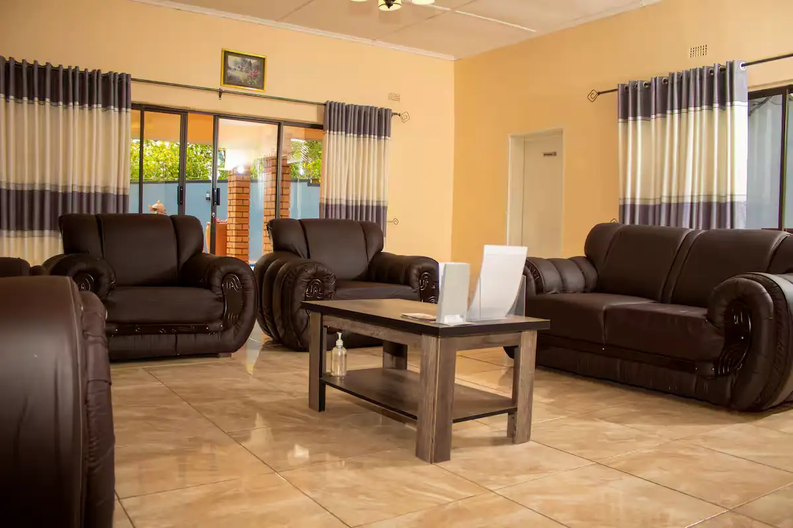

Frequently Asked Questions
Everything you need to know before you arrive - from check-in to activities, breakfast to pool hours.
Privacy & Capacity
Yes - Chitova's is an entire-home rental. From a couple to a full group of eight, the whole property, pool included, is yours alone for your stay. There are no shared spaces, no other guests, and no hotel schedule.
Chitova's sleeps up to 8 guests across four private bedrooms. A crib is available for infants if needed.
The guesthouse is fully walled and gated with 24-hour access for guests, smoke and CO alarms, a first aid kit on site, and free parking with a private garage.
Yes - the property has a crib, high chair, children's dinnerware, books and toys on hand. The pool is private and the property is fully walled, making it safe for children of all ages.
Dining & Daily Life
Breakfast is included every morning and prepared fresh at a time of your choosing - just let our team know what works for your schedule. The kitchen is also fully equipped if you prefer to cook.
The private pool is open daily from 6AM to 10PM, with loungers, shade umbrellas, and a covered patio around the courtyard.
Yes - laundry service is available on request. Ideal for longer stays.
Practical
The property has solar backup power and a backup water tank, so your stay is never affected by local grid outages.
About a 10-minute drive to the Falls entrance and rainforest walk. The town centre, restaurants, and markets are a 5-minute walk. The airport is 20 minutes.
Minimum stay requirements vary by season and are set through our Airbnb and Booking.com listings. Long-term stays of 28 days or more are also welcome - contact us directly for those.
Yes - our team has helped guests arrange everything from rafting trips and helicopter tours to airport transfers and restaurant bookings. We know the best local operators and can advise on timing, pricing, and what suits your group.
The US Dollar is the preferred currency throughout Zimbabwe, including Victoria Falls, and is widely accepted for accommodation, dining, and activities. We recommend bringing cash for your stay.
Visa requirements vary by nationality, so it's worth confirming yours ahead of your trip.